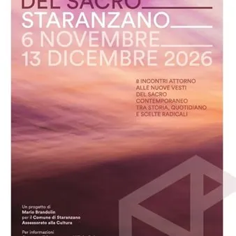

da ven 6 nov a dom 13 dic
"Le metamorfosi del sacro" a Staranzano
Pensiero critico e contenuti d’attualità tornano al centro della proposta culturale promossa dal Comune di Staranzano con la rassegna "Le metamorfosi del Sacro": un ciclo di otto incontri, in programma nel comune bisiaco dal 6 novembre al 13 dicembre 2026, che portano la…
 Indicazioni
Indicazioni
- Costi e prenotazioni
- Costo non indicato · Prenotazione non indicata
- Programma
- Programma da verificare. Apri la fonte ufficiale per orari e possibili aggiornamenti.
- In caso di maltempo
- Nessuna indicazione specifica pubblicata.
- Note
- Acquisito automaticamente dalla fonte.
L’EVENTO
Descrizione completa
Pensiero critico e contenuti d’attualità tornano al centro della proposta culturale promossa dal Comune di Staranzano con la rassegna "Le metamorfosi del Sacro": un ciclo di otto incontri, in programma nel comune bisiaco dal 6 novembre al 13 dicembre 2026, che portano la collettività a riflettere sulle nuove connotazioni culturali del "sacro" nella società contemporanea.
Il progetto è ideato da Mario Brandolin per il Comune di Staranzano – Assessorato alla Cultura e realizzato in collaborazione con Associazione Libertà Territorio Solidarietà, Acli Staranzano, Parrocchia SS. Pietro e Paolo, Associazione Culturale “Le Colone”, con il prezioso supporto della Regione Autonoma Friuli Venezia Giulia e della BCC Venezia Giulia.
Ad aprire la rassegna, venerdì 6 novembre, alle ore 20:30, in Sala San Pio X, un ospite di rilievo nazionale come Vito Mancuso, uno dei più importanti teologi e studiosi di scienze religiose dei nostri tempi. Noto per la sua eccelsa capacità divulgativa e di approfondimento, ha al suo attivo oltre una ventina di saggi, nei quali affronta i diversi aspetti legati alla ricerca sulla spiritualità e sulla religione cattolica e cristiana. La sua riflessione si fonda sulla distinzione tra Gesù, l’uomo storico, e Cristo, il principio spirituale che trascende la storia. La figura di Cristo è il risultato di una progressiva elaborazione della tradizione cristiana, che ha attribuito alla vicenda umana di Gesù significati teologici e simbolici. Mancuso invita a distinguere la storia dalla sua interpretazione religiosa, mettendo in discussione alcuni fondamenti del cristianesimo istituzionale, senza negare il bisogno umano di spiritualità e trascendenza.
Venerdì 13 novembre, alle ore 20.30, la rassegna si sposta in Sala Delbianco con la filosofa e teologa Claudia Paganini, protagonista dell'incontro dal titolo “Il nuovo Dio. Intelligenza artificiale e ricerca del senso religioso dell’essere umano”. L'esperta, a dialogo con Carmine Del Rosso, specializzato in sistemi digitali e AI, affronta il rapporto tra intelligenza artificiale e bisogno umano di trascendenza in una società segnata dalla crisi dei riferimenti religiosi e dalla ricerca di senso. La tesi provocatoria della Paganini è che l’essere umano possa essere arrivato a creare concretamente un’entità sulla quale proiettare il proprio bisogno di divinità. Il rischio è che la fiducia nella tecnologia si trasformi in una nuova forma di fede, mentre il potere si concentra nelle mani di chi la progetta e la governa, assumendo il ruolo di nuovi sacerdoti.
Venerdì 20 novembre, alle ore 18:30, in Sala Delbianco, è la volta della conferenza “Crisi e Sacro. Una prospettiva antropologica”, tenuta dal Prof. Giuseppe Grimaldi, antropologo delle migrazioni presso l'Università degli Studi di Trieste, che ritiene che il sacro sia in crisi perché diminuiscono le pratiche religiose, le vocazioni e la partecipazione alle istituzioni ecclesiastiche. Alla base delle sue convinzioni, vi è l'idea che il sacro possa aiutare l’essere umano a non perdere la propria capacità di affrontare il mondo quando le certezze vacillano.
L’appuntamento successivo della rassegna è previsto per domenica 22 novembre, alle ore 18.30, nella Chiesa Parrocchiale SS. Pietro e Paolo, dove l’Associazione culturale “Le Colone” mette in scena lo spettacolo musicale e teatrale “In direzione ostinata e contraria - La buona novella" di Giuseppe Tirelli, realizzato con il patrocinio della Fondazione Fabrizio De Andrè. Si tratta di una rilettura dei Vangeli apocrifi rimasta alla storia per l’elaborazione di Fabrizio De André: qui emerge la vocazione umana e terrena di Gesù, la cui figura viene narrata attraverso la voce dei personaggi che hanno a che fare con lui e la sua storia. Un’allegoria che accomuna l’oggi alla visione di Gesù, che da sempre ha combattuto contro gli abusi del potere e i soprusi dell’autorità, in nome di un egalitarismo e di una fratellanza universali.
Mercoledì 2 dicembre, alle ore 18:00, la Sala Delbianco ospita la conferenza “Dalla fantascienza religiosa alle fanta-religioni”, tenuta dallo scrittore Alberto Cecon. La letteratura fantastica ha da sempre intrecciato immaginazione e religione, rielaborando divinità, miti e riti per interrogare il bisogno umano di credere e di attribuire un significato all’esistenza superando l’esperienza ordinaria: il fantasy, la fantascienza e il genere weird inventano divinità e cosmologie alternative, utilizzandole anche per mettere in discussione la società e le sue certezze.
Venerdì 4 dicembre, alle ore 18:30, in Sala Delbianco si passa all'incontro dal titolo “Il sacro, la guerra e la città nella Grecia classica”, una riflessione sul rapporto tra sacro, guerra e città nella Grecia classica ad opera di Paola Schirripa, classicista specializzata in storia e letteratura greca. La studiosa evidenzia come nel mondo classico la città non era vista solo come uno spazio abitato e politicamente organizzato, ma era piuttosto la rappresentazione terrena del profondo legame tra comunità umana e mondo degli dèi. In questo senso, un'eventuale guerra non portava solo a una distruzione a livello fisico e sociale, ma comprometteva anche quell’orizzonte simbolico e religioso entro cui una comunità riconosceva la propria identità.
Venerdì 11 dicembre, sempre alle ore 18:30 in Sala Delbianco, è la volta dei giovani sacerdoti don Manuel Millo e don Matteo Marega, ordinati da poco e molto conosciuti sul territorio; a dialogo con Mario Brandolin, gli ecclesiastici esplorano senza formule preconfezionate o intenti apologetici la questione “I giovani e il sacro”, ovvero il rapporto vivo tra le nuove generazioni e la dimensione della fede.
Il concetto del sacro si interseca con il periodo di riflessione che attende il Natale nell’appuntamento conclusivo della rassegna, in programma domenica 13 dicembre, alle ore 18.30, nella Chiesa Parrocchiale SS. Pietro e Paolo, che ospita la performance "Parole e musica per un domani - Percorsi di pace”, un progetto multimediale (musica, letture, video) ideato e diretto da Giuseppe Tirelli e promosso dall’Associazione culturale “Le Colone”. Un evento per coro, solisti, voci recitanti e piccola orchestra, che intreccia musiche gregoriane, canzoni cantautorali, arrangiamenti originali e letture. Al fianco degli interpreti anche il quartetto d’archi “Meti”. L’allestimento è coadiuvato dalle video proiezioni originali da Africa (curate da Don Massimo Manservigi - Congo, Sudan) striscia di Gaza (Loris De Filippi) e Ucraina (testimonianze di abitanti Ucraini). Musiche ed elaborazioni sono originali, con una solida struttura drammaturgica, per riflettere tra società, arte, solidarietà su cosa significhi oggi realmente la pace.
IL PROGRAMMA
Programma e orari
Appuntamenti raccolti dalle fonti elencate. Dove manca un orario, non è ancora disponibile in questa scheda.
Programma pubblicato
- Dal 2026-11-06 al 2026-12-13
INFORMAZIONI UTILI
Prima di partire
- Controllare la fonte prima di partire.
ORGANIZZAZIONE